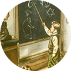
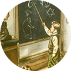
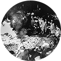
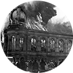
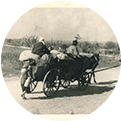

1933 - 1939
Nazismo al poder
Una vez instalado en el poder, el nazismo se hizo de los medios necesarios para propagar su ideología e instalar un Estado totalitario.
 

EDUCACIÓN Y PROPAGANDA
La educación y la propaganda fueron dos herramientas fundamentales en la
maquinaria nazi. A través de ellas se divulgaba la ideología, se incitaba al odio
y discriminación y se formaba a las próximas generaciones de acuerdo a los
intereses nazis.

Una vez en el gobierno, el nazismo utilizó su poder para poner en práctica su ideología. Los nazis persiguieron el arte que ellos consideraban no adecuado y eliminaron la libertad de prensa.

Con el paso del tiempo los judíos fueron privados de sus derechos civiles y legales.
En la noche del 9 de noviembre de 1938 hubo un estallido de violencia contra los
judíos en todo el Reich; esa noche es conocida como la Noche de los Cristales Rotos.

Después de la Noche de los Cristales Rotos se aceleró la emigración judía de Alemania,
Austria y Checoslovaquia. La mayoría de los países del mundo cerraron sus puertas y los judíos, desesperados, intentaron escapar a cualquier destino.